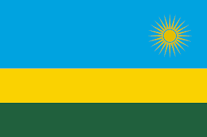
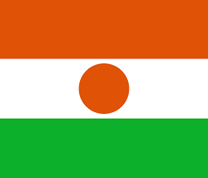
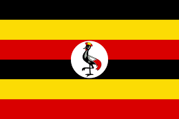
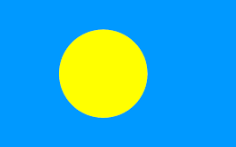
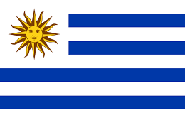

| Europa | Asia | Africa | Oceania | Colon |
|---|---|---|---|---|
| Alemania | Japon | Nigeria | Samoa | Mexico | Francia | Tailandia | Kenia | Fiyi | Brasil |
| Italia | Vietnam | Ruanda | Palaos | Colombia |
| Portugal | Taiwan | Niger | Australia | Uruguay |
| Inglaterra | Hong Kong | Uganda | Tonga | Canada |
Alemania es considerada como uno de los países más desarrollados del mundo tiene también uno de los niveles de vidas más altos.

Francia, en Europa Occidental, abarca ciudades medievales, villas alpinas y playas mediterráneas. París, su capital, es famosa por sus firmas de alta costura, los museos de arte clásico, como el Louvre, y monumentos como la Torre Eiffel.

Italia, país europeo con una larga costa mediterránea, influyó considerablemente en la cultura y la cocina occidental

Portugal es un país del sur de Europa en la península ibérica, que limita con España. Su ubicación en el océano Atlántico influyó en muchos aspectos de su cultura: el bacalao en sal y las sardinas a la parrilla son platos nacionales, las playas del Algarve son un importante destino

Inglaterra, la cuna de Shakespeare y The Beatles, es un país de las Islas Británicas que limita con Escocia y Gales.

Japón es una nación insular del océano Pacífico con densas ciudades, palacios imperiales, parques nacionales montañosos y miles de santuarios y templos

Tailandia es un país del Sudeste Asiático. Es famoso por sus playas tropicales, los opulentos palacios reales, las ruinas antiguas y los templos adornados con figuras de Buda.

Vietnam es un país del Sudeste Asiático, en el mar del Sur de China, conocido por sus playas, ríos, pagodas budistas y ciudades desbordantes.

Taiwán es una pequeña nación insular a 180 km al este de China, con ciudades modernas, tradicionales templos chinos, centros termales y dramáticos terrenos montañosos.

Hong Kong es un territorio autónomo y una antigua colonia británica en el sureste de China. Su centro urbano activo y densamente poblado es un importante puerto y un centro financiero global con un paisaje lleno de rascacielos.

Nigeria, oficialmente República Federal de Nigeria, es un país de África occidental, que limita con Níger al norte, con Chad en el nordeste, con Camerún en el este y con Benín en el oeste.

Kenia es un país de África Oriental con una costa en el océano Índico. Su territorio abarca sabana, terrenos en lagos, el espectacular Gran Valle del Rift y zonas montañosas altas.

Ruanda es un país sin litoral de África Oriental con un paisaje verde montañoso. Su famoso Parque Nacional de los Volcanes alberga gorilas de montaña y monos dorados.
Níger, oficialmente República del Níger, es un país sin litoral de África Occidental.
Uganda es un país sin litoral en África Oriental cuyo diverso territorio abarca las montañas Rwenzori y el inmenso lago Victoria.
Samoa es un país que abarca el grupo más occidental del archipiélago de Samoa, en la Polinesia. Muchas de sus islas tienen playas bordeadas de arrecifes e interiores escabrosos cubiertos de bosques tropicales con desfiladeros y cascadas.
Fiyi, un país del Pacífico Sur, es un archipiélago de más de 300 islas. Es famoso por sus paisajes escabrosos, las playas bordeadas de palmeras y los arrecifes de coral con lagunas de aguas cristalinas

Palaos es un archipiélago de más de 500 islas, forma parte de la región de Micronesia en el océano Pacífico occidental.
Australia es un país rodeado por los océanos Índico y Pacífico. Sus ciudades principales (Sídney, Brisbane, Melbourne, Perth y Adelaida) son costeras. Su capital, Canberra, se encuentra en el interior.

Tonga es un reino polinésico de más de 170 islas del Pacífico Sur, muchas de ellas deshabitadas y en su mayoría bordeadas de playas blancas y arrecifes de coral, y cubiertas de bosques tropicales.
México es un país entre los Estados Unidos y América Central, conocido por las playas en el Pacífico y el golfo de México, y su diverso paisaje de montañas, desiertos y selvas.

Brasil es un vasto país de Sudamérica que se extiende desde la Cuenca del Amazonas en el norte hasta los viñedos y las enormes cataratas del Iguazú en el sur.

Colombia es un país del extremo norte de Sudamérica. Su paisaje cuenta con bosques tropicales, las montañas de los Andes y varias plantaciones de café.

Uruguay es un país de Sudamérica conocido por su interior verde y costa bordeada de playas. La capital, Montevideo, se ubica en torno a la plaza Independencia, donde alguna vez hubo una ciudadela española.
Canadá es el país norteamericano que se extiende desde los Estados Unidos en el sur hasta el círculo polar ártico en el norte.
 chivas
chivas